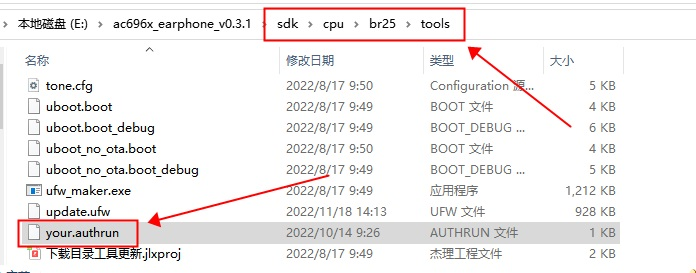
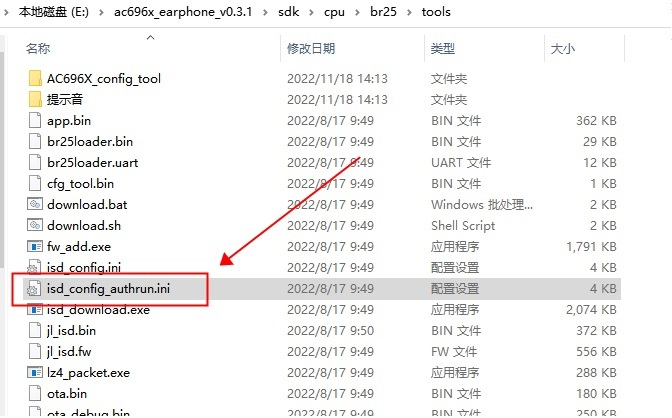
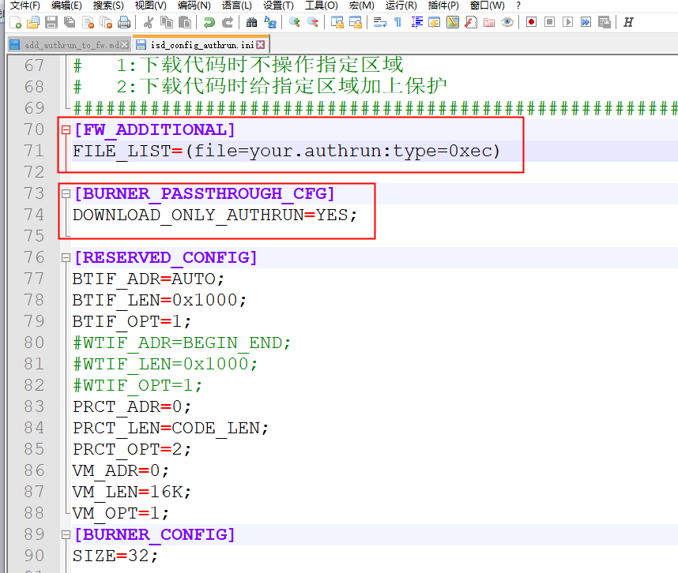
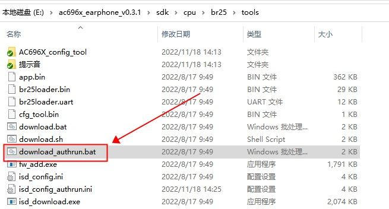
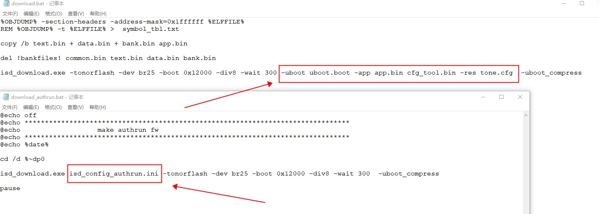
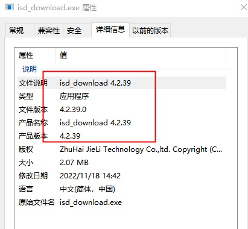
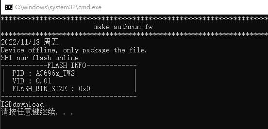
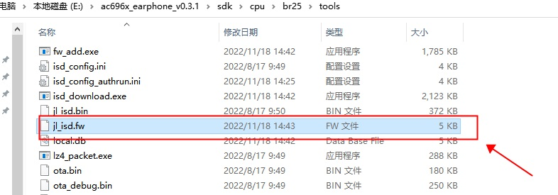

4.6. How to Generate a FW Containing Only the Authorization Executable
Important
This document applies only to special cases. Do not send the .authrun file directly to customers, as this would leak the file.
In general, follow the procedure in What Algorithm Providers Need to Do.
If the algorithm provider needs to do the programming itself, it can use the steps on this page to skip the authorization process.
Do not send the .authrun file directly to customers
This article uses the AC696X earphone SDK v0.3.1 as an example to show how to generate a FW that contains only the authorization executable.
A FW file generated this way lets the algorithm provider program the authorization data itself in advance (without programming the firmware). It is suitable when the algorithm provider authorizes the chips first and then ships them.
To generate a FW containing only the authorization executable for other AC696X SDKs and for AC695X SDKs, follow the steps below.
4.6.1. Copy the programming-time authorization executable .authrun to the FW output directory
After generating the programming-time authorization executable .authrun, copy the .authrun file to the directory where the SDK generates the FW file, as shown below:

4.6.2. Create a new ini file
Make a copy of isd_config.ini in the FW file output directory and name it isd_config_authrun.ini, as shown below:

Add .authrun to FW_ADDITIONAL/FILE_LIST, and also add DOWNLOAD_ONLY_AUTHRUN=YES; under [BURNER_PASSTHROUGH_CFG], as shown below:

Important
This document applies only to special cases. Do not send the .authrun file directly to customers, as this would leak the file.
In general, follow the procedure in What Algorithm Providers Need to Do.
If the algorithm provider needs to do the programming itself, it can use the steps on this page to skip the authorization process.
Do not send the .authrun file directly to customers.
The isd_config.ini file in the customer's download directory must also include the following section (it identifies that this FW supports multiple algorithms, so that the programmer programs the flash configuration information into the chip):
[BURNER_PASSTHROUGH_CFG]
DOWNLOAD_ONLY_AUTHRUN=YES;
4.6.3. Create a new bat script
Make a copy of download.bat in the FW file output directory and name it download_authrun.bat, as shown below:

Delete all commands in download_authrun.bat except isd_download.exe.
Delete all of the -uboot, -app and -res parameters after isd_download.exe.
Then add isd_config_authrun.ini after isd_download.exe.
As shown below:

4.6.4. Update the tools in the FW file output directory
Run 下载目录工具更新.jlxproj in the FW file output directory to update the tools. Make sure that the version of isd_download.exe is 4.2.39 or later, as shown below:

For how to update the tools, see How to Update the Tools
4.6.5. Generate the FW file
Run download_authrun.bat to generate a FW file that contains only the .authrun file, as shown below:

